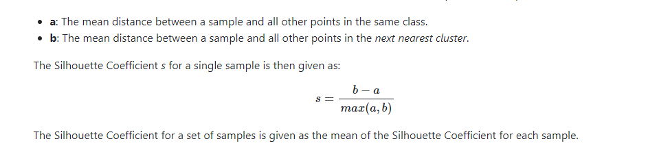

Week 1 - Starting with audio clustering
Let us get started with the week-2
I started discussing the layout of the project with my mentor this week, after discussion we figured out some points to get the clustering going.
The Aim of the audio clustering projects is to make a system that clusters the audio based on the pronunciation and Clustering all Content from the same Speaker together would also be nice as an Option.
Clustering based on pronunciation there can be two main broad approaches :
Approach-1:
For the clustering, we ideally want to cluster based on the pronunciation, so we would like to extract the letter that differs in both the pronunciation , for example in the case of ideology “ai” and “ee” . We can use the textGrid file to extract the part from the audio containing the sound and then apply the clustering algorithms. Note that We only Need this Approach where the TextGrid does not Show the difference. In the case of ideology, afaik it Always says "ai" and never "ee" because it is based on a Dictionary that only knows the first pronunciation.
Approach-2:
Extract the complete word example “ideology” and then apply the clustering algorithms.
The tasks for this week are:
Task-1
1)See the results of clustering in dataset based on the two scenarios
a)based on the vowel sound that differs in both pronunciation
b)complete word
Task-2
2) Start with the image clustering, extend the existing script that my mentor has provided me earlier.
Lets get started !!
To extract the word/vowel part from the audio we need to have the timeframe of that word or vowel.Here the textGrid files comes to help, we have extracted the textGrid files from the audio and the transcript files in the previous week, now for each audio we have the textGrid files.
To extract the timeframe from the textGrid I use the tgt library. It can be install via pip
pip install tgt
The documentation to use the library is :https://textgridtools.readthedocs.io/en/latest/api.html
Let us understand the readTextGridUpdate() function ( code below)
text_grid= tgt.read_textgrid(filename)
This line is reading the textGrid file and returning the object i.e text_grid . A text_grid object has the tiers . A tier according to my understading is the levels of the representation of a word textGrid provides .
As you can see the image below this textGrid has 3 tiers.
a)The Tier 1 name is "ORT-MAU" : It provides the timeframe of the entire word
b)The Tier 2 name is "KAN-MAU": It provides the timeframe of the word pronunciation
c)The Tier 3 name is "MAU": It provides the timeframe of each letter in the word
Also each tier has some intervals denoting the number of items each tier has
In the code I loop through all the tiers , and for each tier I searched for the word and the vowel for which I want to extract the time. This was done using tier.get_annotations_with_text().
This function readTextGridUpdate() returns all the matching intervals , now there can be a case where we may have the word more than once in the textGrid file ( note that we also have the ideology five word dataset). In that case I used the first occurrence of the word. The function returns the start and end time of both word and the vowel.
Now lets see the audio_trimming() function:
The function takes the starting and the ending time and trim the audio according to it. We have used the sampling rate of 16000 to load the audio . My mentor suggested me to use this sampling rate as most speech processing Systems use 16 kHz . See the explanation in this link.
https://en.wikipedia.org/wiki/Sampling_(signal_processing)#Sampling_ratehttps://en.wikipedia.org/wiki/Sampling_(signal_processing)#Sampling_rate
Let us visualize if the script is running correct or not.
Let's first test for ideology, the differentiating sound in both pronunciations is "aI / EE."I took the first audio file with the pronunciation" EE "and simulate it on the praat software Note that" EE "is represented by the" aI "in the textGrid and therefore in the praat software.
Now if we visualize the same thing after trimming the word as it is visible in the representation provided by the praat software then we have trimmed it right.
Now let us look the second ideology pronunciation i.e “AI”, this is interesting case look that this audio contain some sound other than the ideology and ideally we do not want that so the trimming of the word is useful in such sscenarios. Here also the representation is getting matched after trimming so we can conclude that our
trimming function is working correctly

The same thing was validated for the other dataset.
Now let us apply the basic machine learning models .In this week I applied these models:
1)K Means (requires number of clusters)
2.Agglomerative Clustering (requires number of clusters but not necessary)
3)Birch (requires number of clusters)
4)DBSCAN
5)Mean shift
6)Optics
7)Gaussian Mixture(requires number of clusters)
We have 3 datasets as of now a)Ideology 200 ms b)Muslim c)Ideology 5 word , for each dataset I apply these models on a) complete data b)pca transformed c)T-SNE transformed
1.PCA :PCA is to represent a multivariate data table as smaller set of variables (summary indices) in order to observe trends, jumps, clusters and outliers. Statistically, PCA finds lines, planes and hyper-planes in the K-dimensional space that approximate the data as well as possible in the least squares sense.
2.t-SNE: The t-SNE algorithm calculates a similarity measure between pairs of instances in the high dimensional space and in the low dimensional space. It then tries to optimize these two similarity measures using a cost function.
Which is better?
t-SNE is a probabilistic method while PCA is a mathematical technique. Also In order to represent high dimension data on low dimension, non-linear manifold, it is essential that similar data points must be represented close together, which is something t-SNE does not PCA.
These are some good articles on PCA and t-SNE
https://www.datacamp.com/community/tutorials/introduction-t-sne
https://towardsdatascience.com/an-introduction-to-t-sne-with-python-example-5a3a293108d1
Evalauation metrics :
There are majorly two types of measures to assess the clustering performance.
(i) Extrinsic Measures which require ground truth labels. Examples are Adjusted Rand index, Fowlkes-Mallows scores, Mutual information based scores, Homogeneity, Completeness and V-measure.
(ii) Intrinsic Measures that does not require ground truth labels. Some of the clustering performance measures are Silhouette Coefficient, Calinski-Harabasz Index, Davies-Bouldin Index etc.
https://towardsdatascience.com/clustering-evaluation-strategies-98a4006fcfc
Results
The abbrevations I have taken are
1.Adjusted Rand index -> ARI
2.Mutual Information based scores-->MI
3.Homogeneity-->H
4.completeness ->C
5.V-measure ->V
6.Fowlkes-Mallows score ->FM
7.Accuracy ->A
8.Recall ->R
9.Precision ->P
A brief overview of the clustering evaluation techniques
1)Adjusted Rank Index
- It requires ground truth labels and the cluster labels.
- It measures the similarity of the cluster assignments
- The range is from -1 to +1. The negative value denotes the bad clustering, zero denotes the random assignments and the positive denote the similar clustering while 1 is the best match score.
- Mathematical intuitionSklean-source
2)Mutual Information
- It requires ground truth labels and the cluster labels.
- It measures the agreement of the cluster assignments
- The range is from 0 to +1. Zero score denotes the largely independent assignments while the positive denotes the significant agreement .
- Mathematical intuitionSklean-source
3)homogeneity:
- It requires ground truth labels and cluster labels
- Homogeneity describes the closeness of the clustering algorithm to this perfection. A perfect homogeneity means each cluster contains only members of a single class.
- The range is from zero to one
4)completeness:
- It requires ground truth labels and cluster labels
- A perfect completeness means all members of a given class are assigned to the same cluster.
- The range is from zero to one
5)V measure:
- It requires ground truth labels and cluster labels
- It is the harmonic mean of homogeneity and completeness
- The range is from zero to one
- Mathematical intuitionSklean-source
6)Fowlkes-Mallows score:
- It requires ground truth labels and cluster labels
- It is the geometric mean of pairwise precision and recall
- The range is from zero to one, values of exactly 0 indicate purelyindependent label assignments and positive denotes the significant agreement .
- Mathematical intuitionSklean-source
7)Silhouette coefficient:
- No ground truth labels are required evaluation is performed using the model
- Silhouette Coefficient score relates to a model with better defined clusters
- The range is from -1 to +1, the negative score denotes the incorrect clustering , zero score denotes the overlapping clusters and positive score denotes the highly dense clustering
- Mathematical intuitionSklean-source 
8)Calinksi-Harabasz Index
- No ground truth labels are required evaluation is performed using the model
- Calinksi-Harabasz score relates to a model with better defined clusters
- The score is higher when clusters are dense and well separated
- Mathematical intuitionSklean-source

9)Davies-Bouldin Index
- No ground truth labels are required evaluation is performed using the model
- This index signifies the average ‘similarity’ between clusters, where the similarity is a measure that compares the distance between clusters with the size of the clusters themselves
- The score is higher when clusters are dense and well separated, zero is the lowest score
- Mathematical intuitionSklean-source
10)Accuracy
- Ground truth labels are required evaluation is performed using the model
- Accuracy metric that allows you to measure the total number of predictions a model gets right.
- Mathematical intuition
11)Precision
- Ground truth labels are required evaluation is performed using the model
- Precision talks about how precise/accurate your model is out of those predicted positive, how many of them are actual positive.
- Mathematical intuition
12)Recall
- Ground truth labels are required evaluation is performed using the model
- Recall actually calculates how many of the Actual Positives our model capture through labeling it as Positive
- Mathematical intuition
Lets see the results of audio clustering
In the case of audio data we have the knowledge of the ground truth labels so the Extrinsic evlauation metric will be used
The source code can be found in this link
https://github.com/Himani2000/GSOC_2020/blob/master/Audio_Clustering_Models.ipynbIdeology 200 ms dataset
One of the most important thing to note here is that I have provied the number of cluster parameter as 2 in the case of K-means,Agglomerative , Birch, and gaussian mixture since there are 2 sounds(aI and EE) and the DBSCAN, mean shift and OPTICs find cluster by themselves
Conclusions :My understanding is that if we look into the number of clusters then the mean shift and optics are performing better than the DBSCAN . Birch, Mean-shift and optics are performing better in the "ideology-word "case whereas the Gaussian mixture is performing better in the "ideology-vowel" case . Overall the scores for each model are not good as most are close to zero(maximum can be 1) which is not a good indication
If we compare all the metrics of every model then the "vowel" case is performing significantly better than the "word" case
Conclusions Here the DBSCAN is able to find the two clusters in the "word" case and both DBSCAN and mean shift clustering is able to find thetwo clusters in the "vowel" case
If we compare all the metrics of every model then the "vowel" case is performing significantly better than the "word" case

Conclusions DBSCAN, Mean shift and OPTICS are not able to find the clusters close to 2 in the both "word case" and the "vowel case"
If we compare all the metrics of every model then the "vowel" case is performing significantly better than the "word" case
Muslim dataset
One of the most important thing to note here is that I have provied the number of cluster parameter as 5 in the case of K-means,Agglomerative , Birch, and gaussian mixture since there are 2 sounds(u and A) and 3 other labels (misaligned, some other and cant decide ) and the DBSCAN, mean shift and OPTICs find cluster by themselves
Conclusions Note that here the number of clusters should be ideally close to five None of Mean-Shift,DBSCAN and OPTICS is able to find the five clusters in the both "word" and the "vowel"case
If we compare all the metrics of every model then the "vowel" case is performing significantly better than the "word" case
Conclusions Note that here the number of clusters should be ideally close to five None of Mean-Shift,DBSCAN and OPTICS is able to find the five clusters in the both "word" and the "vowel"case
If we compare all the metrics of every model then the "vowel" case is performing significantly better than the "word" case
Conclusions Note that here the number of clusters should be ideally close to five None of Mean-Shift,DBSCAN and OPTICS is able to find the five clusters in the both "word" and the "vowel"case
If we compare all the metrics of every model then the "vowel" case is performing significantly better than the "word" case
Ideology five word dataset
ConclusionsNone of Mean-Shift,DBSCAN and OPTICS is able to find the two clusters in the both "word" but Mean shift is able to find the two clusters in the "vowel"case
If we compare all the metrics of every model then the "vowel" case is performing significantly better than the "word" case
Conclusions DBSCAN ais able to find the five clusters in the both "word" whole all DBSCAN, Mean-shift and OPTICS is able to find the two clisters in the "vowel"case
If we compare all the metrics of every model then the "vowel" case is performing significantly better than the "word" case
Conclusions None of Mean-Shift,DBSCAN and OPTICS is able to find the five clusters in the both "word" while the Mean-shift is able to find the two clusters in the "vowel"case
If we compare all the metrics of every model then the "vowel" case is performing significantly better than the "word" case
Lets get started with the Image clustering
The code can be found in https://github.com/Himani2000/GSOC_2020/blob/master/Image_clustering.ipynb
In the case of image data we do not have the knowledge of the ground truth labels so the Intrinsic evlauation metric will be used
1)In the ideology dataset the resulst of agglomerative clustering:
2)In the ideology DBSCAN results returned only 1 cluster and all the metrics required more than one cluster to evaluate thus DBSCAN does not worked in this.
3)Mean Clustering results:
4)In the muslim dataset the aaglomerative clustering results:
5)In the muslim dataset the Mean shift clustering results:
6)In the Muslim dataset DBSCAN and OPTICS both results returned only 1 cluster and all the metrics required more than one cluster to evaluate thus DBSCAN does not worked in this.
Things to be added in the this blog
1.Mean ckustering results for ideology which is getting trained right now(taking so much time)
2.Cluster visualizations
3.Ideology dataset results visualizations